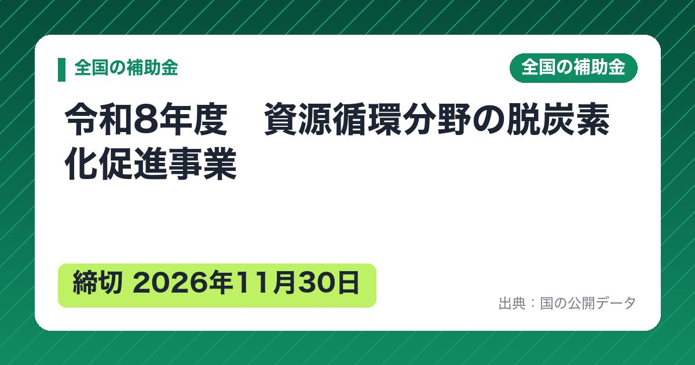

令和8年度 資源循環分野の脱炭素化促進事業

締切 2026年11月30日｜上限 4,400万円
海外展開支援：FS調査用補助金
概要
| 対象地域 | 全国 |
|---|---|
| 補助上限額 | 4,400万円 |
| 補助率 | 1/2（中小企業は2/3） |
| 受付期間 | 2026年4月14日 〜 2026年11月30日 |
| 対象の従業員数 | 従業員数の制約なし |
| 利用目的 | 新たな事業を行いたい / 販路拡大・海外展開をしたい / イベント・事業運営支援がほしい / 研究開発・実証事業を行いたい / エコ・SDGs活動支援がほしい |
| 対象業種 | 漁業 / 建設業 / 製造業 / 電気・ガス・熱供給・水道業 / 情報通信業 / 複合サービス事業 / サービス業（他に分類されないもの） / 公務（他に分類されるものを除く） / 分類不能の産業 / 農業、林業 / 鉱業、採石業、砂利採取業 / 運輸業、郵便業 / 卸売業、小売業 / 金融業、保険業 / 不動産業、物品賃貸業 / 学術研究、専門・技術サービス業 / 宿泊業、飲食サービス業 / 生活関連サービス業、娯楽業 / 教育、学習支援業 / 医療、福祉 |
| 実施機関 | 令和8年度 資源循環分野の脱炭素化促進事業 |
広告補助金の申請には決算書・帳簿が必要です。会計ソフト・開業の手続きの例：
・やよいの青色申告オンライン  （個人事業主の確定申告に）
（個人事業主の確定申告に）
・無料の確定申告自動化ソフト マネーフォワード クラウド確定申告  （確定申告をかんたんに）
（確定申告をかんたんに）
・無料の会計自動化ソフト マネーフォワード クラウド会計  （法人・個人の会計を自動化）
（法人・個人の会計を自動化）
・補助金なら、パソコンとセットでお得に導入【freee会計】  （補助金を使う導入プランあり・詳細は公式で）
（補助金を使う導入プランあり・詳細は公式で）
・開業届作成するなら【弥生のかんたん開業届】  （創業補助金の前に個人で開業する方へ）
（創業補助金の前に個人で開業する方へ）
・会社設立を無料で始めるなら【弥生のかんたん会社設立】  （法人を作る方へ）
（法人を作る方へ）
公募の内容（原文の抜粋）
■目的・概要
経済成長や人口増加に伴い、世界規模で廃棄物の発生量が増加し、その質も多様化していることから、適正な廃棄物処理が世界的な課題になっています。この傾向は、経済成長が著しいアジアをはじめとした途上国で顕著であり、廃棄物の急増・多様化に加え、廃棄物処理体制も未整備・未成熟であることから、廃棄物の不適正な処理に伴う環境汚染が懸念されています。例えば、新興国においては、経済発展や都市の発展の一方で、廃家電等の実効的なリサイクル制度が運用されておらず、野焼き等による環境汚染、健康被害、資源損失が発生しています。
一方、我が国は、これまで廃棄物処理やリサイクルに係る社会的要請に応じるため、廃棄物処理・リサイクルに関する技術を向上させてきました。その結果、我が国の廃棄物処理・リサイクル関連産業は環境保全・資源循環において先進的な技術を有しています。この事業は、エネルギー起源CO2の排出削減に資する廃棄物処理・リサイクル関係事業の国際展開を促進し、もって地球環境保全に資することを目的にしています。
■応募資格
次のア）又はイ）に該当する事業であって、数年以内に事業開始を計画しているもの。
ア） 海外において実施される廃棄物等の収集・運搬事業、中間処理事業、リサイクル事業、最終処分事業（直接エネルギー起源CO2が削減されるものに限る。）
イ） 海外において、アの事業を実施する行政や事業者からの委託を受け、これに必要な施設を 建設する事業（直接エネルギー起源CO2が削減されるものに限る。）
■地理条件
事業対象国及び地域は、ア）JCMパートナー国、イ）AZECパートナー国を優先とし、ウ）に該当する国及び地域は劣後とします。
ア）JCMパートナー国：2025年8月時点で31か国。詳細は下記リンクを参照。
https://gec.jp/jcm/jp/about/
イ）AZECパートナー国：11カ国（豪州、ブルネイ、カンボジア、インドネシア、日本、ラオス、マレーシア、フィリピン、シンガポール、タイ、ベトナム）。詳細は下記リンクを参照。
https://www.meti.go.jp/policy/energy_environment/global_warming/azec.html
ウ）環境協力全般又は廃棄物分野の協力覚書の締結国又は地域及び二国間協力実施国
アラブ首長国連邦、インド、インドネシア、ウクライナ、ウズベキスタン、カンボジア、クウェート、シンガポール、タイ、ベトナム、フィリピン、マレーシア、モザンビーク、モンゴル、ブラジル、ウズベキスタン、カザフスタン、オマーン、バングラデシュ、バヌアツ、台湾、ラオス
■事業者の要件
事業者は、以下の①～③の要件をすべて満たす者とします。
① 次のア）又はイ）に該当する民間法人であること。
ア） 我が国に本社又は主たる事務所を置いている法人であって、海外に本社又は主たる事務所を置いている法人の子会社でない法人
イ） 上記①ア）の法人の子会社であって、海外に本社又は主たる事務所を置いている法人
② 次のア）又はイ）に該当すること。
ア） 対象となる海外展開事業計画において、自らが事業遂行の中心的な役割を果たす事業者（共同実施の場合（※）には、代表事業者及び共同事業者を指す。）
イ） 上記②ア）の者を含む地方自治体やその他の共同事業者からなるコンソーシアム
③ 次のア）からウ）のいずれかに該当すること。
ア） 令和7・8・9年度環境省競争参加資格（全省庁統一資格）の「物品の製造」、「物品の販売」、「役務の提供等」において、いずれか1つの項目が申請書提出までに「A」、「B」、「C」又は「D」級に格付されている者
イ） 自治体における廃棄物処理に係る調達業務への入札参加資格を取得している者
ウ） 自治体における一般廃棄物処理業又は産業廃棄物処理業の許可を取得している者
※ 二者以上の事業者より事業を共同実施する場合には、その代表者を交付の対象とし、代表者を「代表事業者」、それ以外の事業者を「共同事業者」と称する。
■事業期間
本事業の実施期間は交付決定日から翌年2月末までとします。また、本事業が完了（中止又は廃止の承認を受けた場合を含む。）したときは、その日から起算して30日を経過した日又は本事業の完了した日の属する年度の3月10日のいずれか早い日に完了実績報告書の提出が必要となります。
※本事業は単年度事業です。
■問合せ先
公益財団法人 廃棄物・３Ｒ研究財団 海外センター 奥山、大内、藪本
電話 03-6659-6860 メール kaigai-1@jwrf.or.jp
■参照URL
廃棄物・３Ｒ研究財団ホームページ参照
資源循環分野の脱炭素化促進事業｜公益財団法人 廃棄物・３Ｒ研究財団
広告
全国のほかの補助金
- 「グリーンイノベーション基金事業／次世代型地熱技術の開発」の公募（締切 2026年11月20日）
- 令和７年度（補正予算）地域脱炭素実現に向けた具体的施策実装支援事業（四次公募）（締切 2026年11月20日）
- 令和８年度地域脱炭素実現に向けた具体的施策実装支援事業（締切 2026年11月20日）
- 【三次公募】令和８年度 天然ガス利用設備による強靱性向上対策事業費補助金（締切 2026年11月20日）
- エイジフレンドリー補助金（締切 2026年11月20日）
- 「太陽光発電導入拡大等技術開発事業」の第3回公募（締切 2026年11月25日）
- 【農林水産省】中山間地域所得確保推進事業（締切 2026年11月25日）
- 「ポスト5G情報通信システム基盤強化研究開発事業（社会課題解決に向けた量子コンピュータ次世代機開発・実証の加速）」（g12-2：部素材）の追加公募（締切 2026年11月26日）